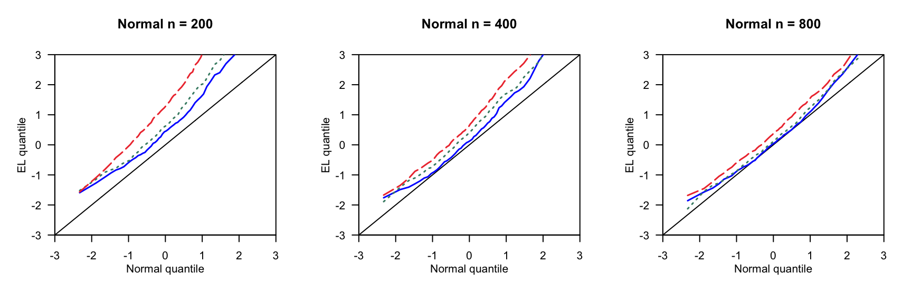

第 2 章 2020-09-27
复现2009ChenSX，P716-718分位数图。
2.1 模拟结果
\(\{X_i\}_{i=1}^n \in \mathbb{R}^p\) 是独立同分布随机变量，来自下面的移动平均模型： \[X_{ij}=Z_{ij}+\rho Z_{ij+1} \quad (i=1,\cdots,n,\ j=1,\cdots,p)\]
此处，对于任意\(i\)，\(\{Z_{ij}\}_{j=1}^{p+1}\)是独立随机变量，并且均值为0，方差相同。我们取标准正态误差。
\(\rho=0.5\)
\(n = 200,400,800\)
\(p=c_1n^{0.4}\)，\(c_1 = 3,4,5\)
\(p=c_2n^{0.24}\)，\(c_2 = 4,6,8\)


2.2 运行代码
2.2.1 覆盖率
#===============================================
# High dimensional Data
#===============================================
# rm(list = ls())
# source('GlambdaChen.R')
#==================修改参数====================#
nsim = 100
n = 800
size = c(42,55,72)
rho = 0.5
a = 0.95
#==================开始模拟====================#
cat('模型进行',nsim,'次','\n')
cat('n ','p ',' EL ','MEL1 ','MEL2 ','\n')
for (p in size){
mu = rep(0,p)
Sigma = diag(p)
for(i in 1:p){
for(j in 1:p){
if(abs(i-j)==1){Sigma[i,j] = rho}
}
}
f1 = 0
f2 = 0
f3 = 0
for(i in 1:nsim){
# 估计方程赋值
Z = matrix(rnorm(n*(p+1),0,1), p+1, n)
Z1 = Z[-(p+1),]
Z2 = Z[-1,]
X = Z1 + rho*Z2
z = t(X)
# 计算EL值
lam = lambdaChen(z)
el = 2*sum( log(1+t(lam)%*%t(z)) )
mel = (el-p)/sqrt(2*p)
if( el <= qchisq(a,p) ) f1=f1+1
if( mel <= qnorm(a,0,1)) f2=f2+1
if( abs(mel) <= qnorm(a+(1-a)/2,0,1)) f3=f3+1
# aa=1+t(lam)%*%t(z)
# glam=rowSums(t(z)/matrix(aa,p,n,byrow = TRUE))
# print(max(abs(glam)))
# cat(el,mel,'\n')
}
# cat('n =',n,'p =',p,'EL =',f1/nsim,'MEL1 =',f2/nsim,'MEL2 =',f3/nsim,'\n')
cat(n,p,f1/nsim,f2/nsim,f3/nsim,'\n')
}2.2.2 绘制分位数图
#===============================================
# figure Q-Q
#===============================================
# source('GlambdaChen.R')
#===================修改参数====================
nsim = 100 # 模拟次数
n = 800 # 样本个数
size = c(42,55,72) # p
m = 100 # 分位数个数
as = (1:m-0.5)/m
#===================收集数据====================
j = 0
C = matrix(NA,nsim,length(size))
colnames(C)=c('c1','c2','c3')
for(p in size){
j = j + 1
for(i in 1:nsim){
# 估计方程赋值
Z = matrix(rnorm(n*(p+1),0,1), p+1, n)
Z1 = Z[-(p+1),]
Z2 = Z[-1,]
X = Z1 + 0.5*Z2
z = t(X)
# 计算EL值
lam = lambdaChen(z)
el = 2*sum( log(1+t(lam)%*%t(z)) )
mel = (el - p) / sqrt(2*p)
C[i,j] = mel
}
cat('n =',n,'p =',p,'完成模拟',nsim,'次\n')
}
write.csv(C, file = paste0('EL',n,p,'.csv'), row.names = FALSE) # 保存数据
qas <- qnorm(as) # 正态分布的分位数点
c1 = sort(C[,1])[ceiling(as*nsim)] # mel的分位数点
c2 = sort(C[,2])[ceiling(as*nsim)]
c3 = sort(C[,3])[ceiling(as*nsim)]
#===================绘制QQ图====================
x = seq(-3,3,0.01)
plot(x,x,
xlim = c(-3,3), ylim = c(-3,3),
xaxs = 'i', yaxs = 'i',
yaxt = 'n',
ann = F, type = 'l')
axis(2, las = 1)
title(main = paste0('Normal n = ',n),
xlab= 'Normal quantile', ylab = 'EL quantile',
line = 2)
lines(qas,c1,type='l',lty=1,lwd=1.5,col='blue1')
lines(qas,c2,type='l',lty=3,lwd=1.5,col='aquamarine4')
lines(qas,c3,type='l',lty=5,lwd=1.5,col='brown2')